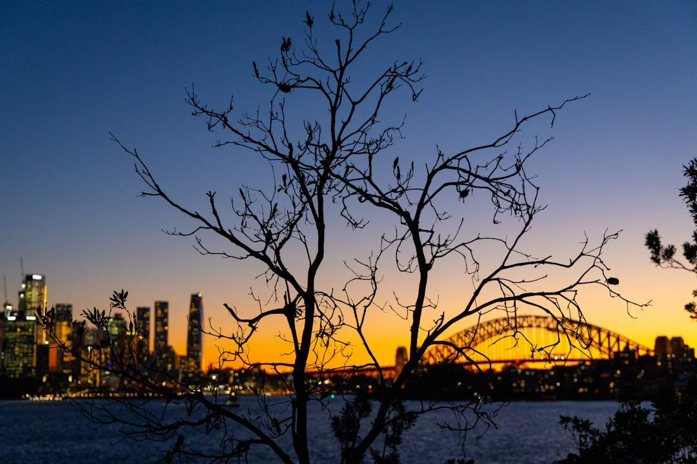

For most Sydney property owners, the key checks are scope, approval needs and a written quote before work starts. The source page puts typical 2026 residential tree removal at about $800 for a small accessible tree and $6,000 or more for a large tree near buildings or power lines. It also points to AS 4373 pruning, council permit checks, and quote details covering timing, access and disposal.
For Sydney owners comparing tree services sydney options, the practical decision is whether the quote covers access, council checks, pruning to AS 4373 and disposal, not just the headline price for the first visit. See Sydney Tree Services for the current service details.
Tree Services Sydney Explained
The source page for Sydney Tree Services frames each enquiry around the tree itself, site access, council requirements and the outcome you want. That matters because two jobs that sound similar on the phone can price very differently once a crew sees height, species, disposal load and whether stump grinding is part of the brief.
Before approving work, ask for the written quote to spell out scope, timing and disposal details. The page also emphasises an itemised written quote before work starts, which makes it easier to compare removal, pruning and report work on like for like terms.
- Confirm whether the job is removal, selective pruning, stump grinding or a report.
- Ask what access issue could change the method or equipment.
- Check whether green waste removal and disposal are included.
- Make sure the visit notes timing, not just price.
Know when pruning beats removal
The home page draws a clear line between selective pruning to Australian Standard AS 4373 and indiscriminate cutting. If the goal is clearance, canopy management or one hazardous limb rather than full removal, that distinction changes the brief you give and the standard you ask the arborist to work to.
The same service list also includes palm care and hedge trimming, so it is worth checking whether you are pricing one tree task or combining related maintenance on the same visit. A qualified arborist matters here because the page says that role includes tree biology, risk and safe work practices, not just cutting branches.
- Ask what pruning outcome is intended, clearance, shape, deadwood removal or risk reduction.
- Ask whether the work will be carried out to AS 4373.
Council and power line issues can reset the plan
Approval and access questions are where many Sydney jobs stop being simple. The source material says many councils require a permit or development consent to remove or heavily prune protected trees under a Tree Preservation Order or Development Control Plan, and that local rules often use DBH thresholds or protected species lists.
That is why arborist reports matter. The page offers reports for council, risk and development, which can help when the decision is not just whether to cut, but whether documented advice is needed before work is approved. Power lines are another hard gate. The page says tree work near power lines in NSW must follow SafeWork NSW requirements and relevant electricity distributor minimum approach distances, and that only trained, authorised operators may work closer than the prescribed distance.
Who this applies to
This guide is most useful if your situation falls into one of the scenarios the source page actually describes, from a single hazardous limb to a full site clearance. It also suits owners who want a written quote before deciding between immediate work and a staged plan.
- Homeowners comparing full removal with a lighter pruning scope.
- Owners who want stump grinding included, not quoted later as a separate item.
- People planning development or a council submission who may need an arborist report first.
- Properties near power lines where crew authorisation and work method matter before anyone starts.
Use price ranges as a screening tool
The page gives one useful benchmark, in Sydney in 2026, typical residential tree removal starts at around $800 for a small, accessible tree and can reach $6,000 or more for a large tree near buildings or power lines. It also says the exact price depends on tree size, species, access and whether stump grinding is included.
Use that range to test whether a quote is in the right band, then compare scope. A cheaper figure is not equivalent if disposal is unclear, if the visit has not considered power lines or council issues, or if the job described is lopping when you actually need selective pruning to AS 4373. For larger jobs, ask what could move the price after inspection so the decision is based on method and scope, not guesswork.
Prepare a better brief before the site visit
The contact prompts on the source page are simple, your suburb or postcode and a description of what needs to happen, but they point to a better way to brief the job. Tell the arborist whether the issue is removal, pruning, stump grinding, a report, or a mix of these, and note any nearby buildings, access limits or power lines from the start.
That makes the free project review and written quote more useful because the first conversation is already anchored to method, timing and disposal details. The site also offers a cost calculator for an indicative Sydney price range in seconds, which can help frame better questions before the visit. If you are comparing providers, ask each one to respond to the same brief so you can judge the difference in scope instead of vague one line prices.
- Describe the job clearly. State whether you need removal, pruning, stump grinding, a report, or a combination before asking for a quote.
- Flag site constraints early. Mention access limits, nearby buildings and any power lines so the first assessment is properly informed.
- Check approvals before booking. Ask whether council rules or a report may apply before approving heavy pruning or removal.
- Compare written scope, not just price. Use the written quote to compare timing, disposal and method on the same basis across providers.
| Service need | What to confirm | Why it changes the decision |
|---|---|---|
| Tree removal | Access, disposal, stump grinding, nearby buildings or power lines | These factors can shift both method and price |
| Selective pruning | Whether the work will be done to AS 4373 | The brief is different from indiscriminate cutting |
| Arborist report | Whether the report is for council, risk or development | The purpose affects what advice is needed |
| Stump grinding | Whether it is included in the written scope | It changes both final price and site finish |
Common questions
How much does tree removal usually cost in Sydney? The source page says that in Sydney in 2026, typical residential tree removal ranges from around $800 for a small, accessible tree to $6,000 or more for a large tree near buildings or power lines. It also says the exact price depends on tree size, species, access and whether stump grinding is included.
Do I need council permission before removing or heavily pruning a tree? Often, yes. The page says many Sydney councils require a permit or development consent for protected trees under a Tree Preservation Order or Development Control Plan, and that rules vary by local government area.
What is the difference between an arborist and a tree lopper? The source page says a qualified arborist carries out selective pruning to AS 4373 and understands tree biology, risk and safe work practices. It says tree lopping generally refers to indiscriminate cutting that modern arboriculture standards discourage.
When is an arborist report worth getting first? A report is worth asking about when council approval, risk concerns or development plans are part of the decision. The source page specifically lists arborist reports for council, risk and development.
This guide covers how to compare Sydney tree work quotes, approvals, pruning standards and access issues before booking.